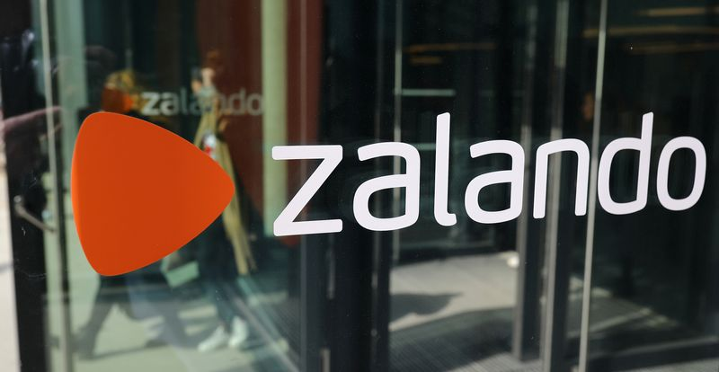

Zalando aims for more than 10% of Europe fashion market
BERLIN (Reuters) – German online fashion retailer Zalando said it aimed to capture more than 10% of the 450 billion euro ($537 billion) European fashion market in the longer term after coronavirus lockdowns supercharged its growth in 2020.
It said its target was for gross merchandise volume (GMV) – sales on its site made by the company or its partners – to exceed 30 billion euros by 2025, almost triple the 10.7 billion euros in 2020.
It outlined its plans after saying net profit more than doubled in 2020 to 226 million euros and announcing 2021 revenue forecast well above market projections.
Founded in Berlin in 2008, Zalando has grown into Europe’s biggest online-only fashion retailer.It plans to expand into six markets in 2021 and two more in 2022, all in eastern Europe.
Its shares, which dipped this year in part due to a decision by Swedish investment firm Kinnevik to distribute its stake, were up 3.8% by 0907 GMT.
Zalando said its profitability in 2020 was helped by a decline in costly returns during the pandemic, with average order size after returns rising to 57.70 euros in the fourth quarter, from 56.60 euros a year earlier.
'Zalando’s strong positioning became evident over the course of 2020, and we believe the platform will continue to take market share, particularly as brands step up their digital efforts,' said Sherri Malek, RBC Europe analyst
Outgoing Co-Chief Executive Rubin Ritter told journalists about half of orders had been returned in 2020.The company, whose main rivals include Boohoo, Asos and Amazon, expects returns to rise after lockdowns ease.
Zalando said more sustainable products accounted for about 16% of GMV in 2020, up from 7% in 2019.The company wants a quarter of its GMV to come from these products by 2023 and says it plans to tighten its criteria for what counts as sustainable.
Zalando expects GMV to increase by 27%-32% to between 13.6 billion and 14.1 billion euros in 2021.GMV rose by around 50% in the first quarter, marking an 'an extraordinarily strong start to the year', Zalando said.
After Ritter in December announced plans to leave the company, Zalando said on Tuesday that founders Robert Gentz and David Schneider would continue to lead it.
Following criticism that the top management team was all male, Zalando said it had appointed Astrid Arndt to a new position of chief people officer on Monday.
($1 = 0.8387 euros)
(Reporting by Emma Thomasson; Editing by Jason Neely and Edmund Blair)
Posted On: 2021-03-16T00:00:00

Content Date: 2021-03-16
Download Date: 2021-04-17
Document ID: L0C04A4UC